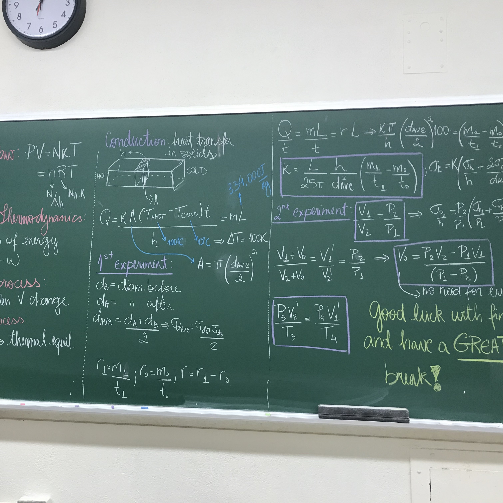
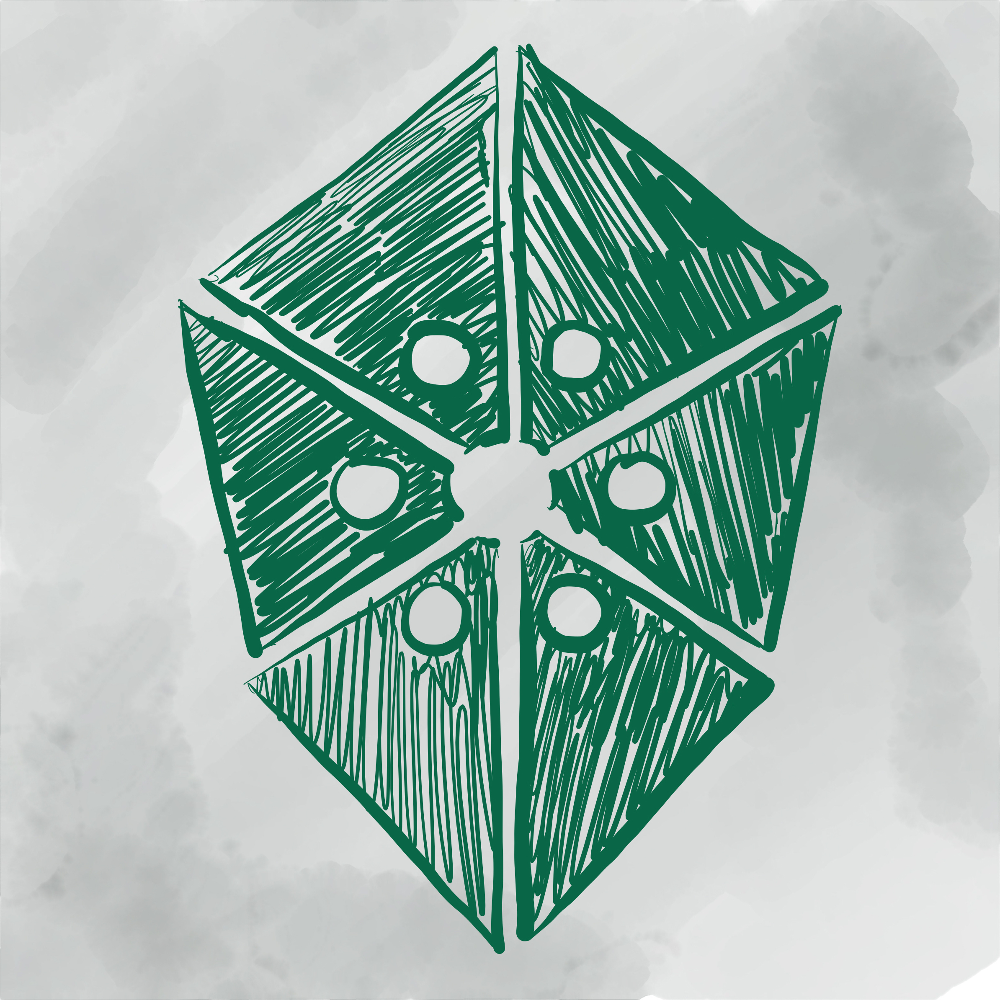
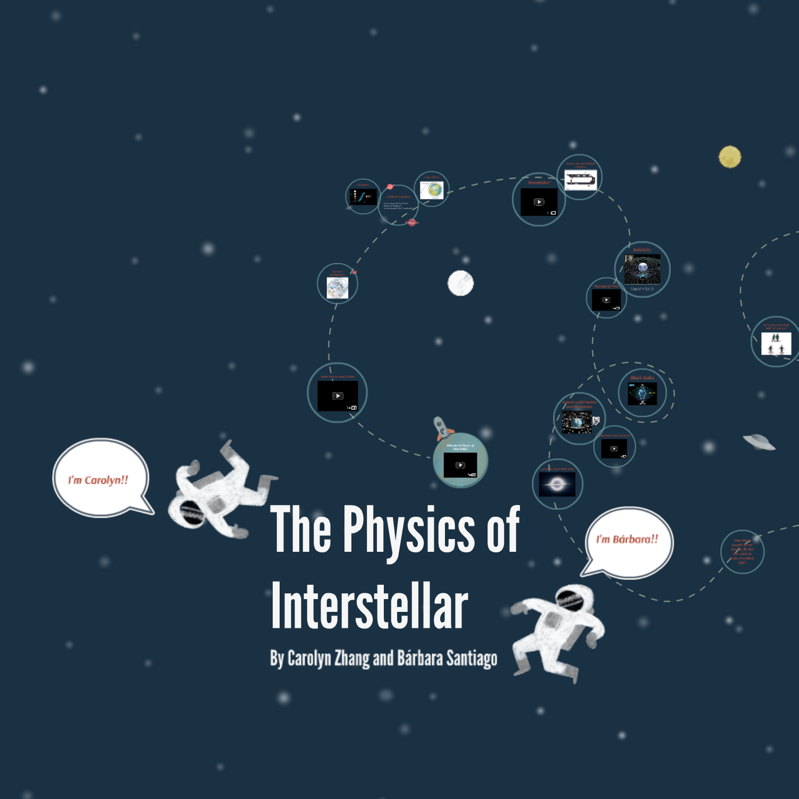
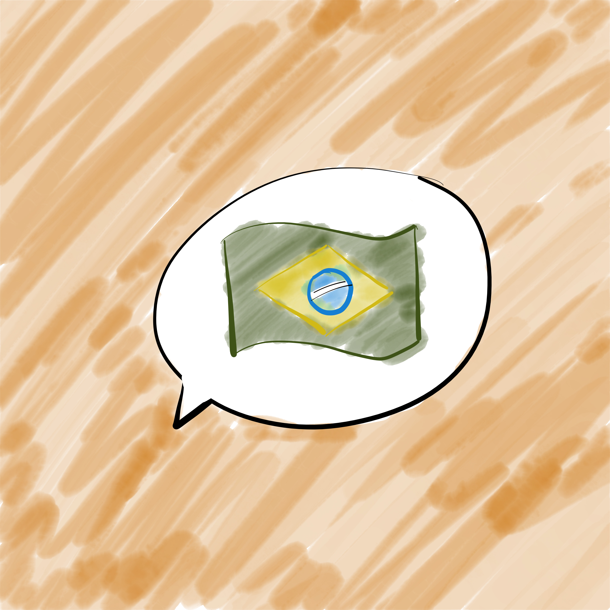
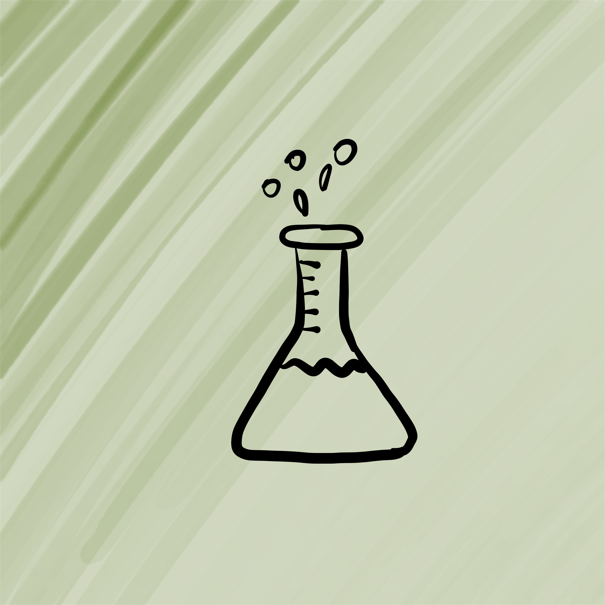
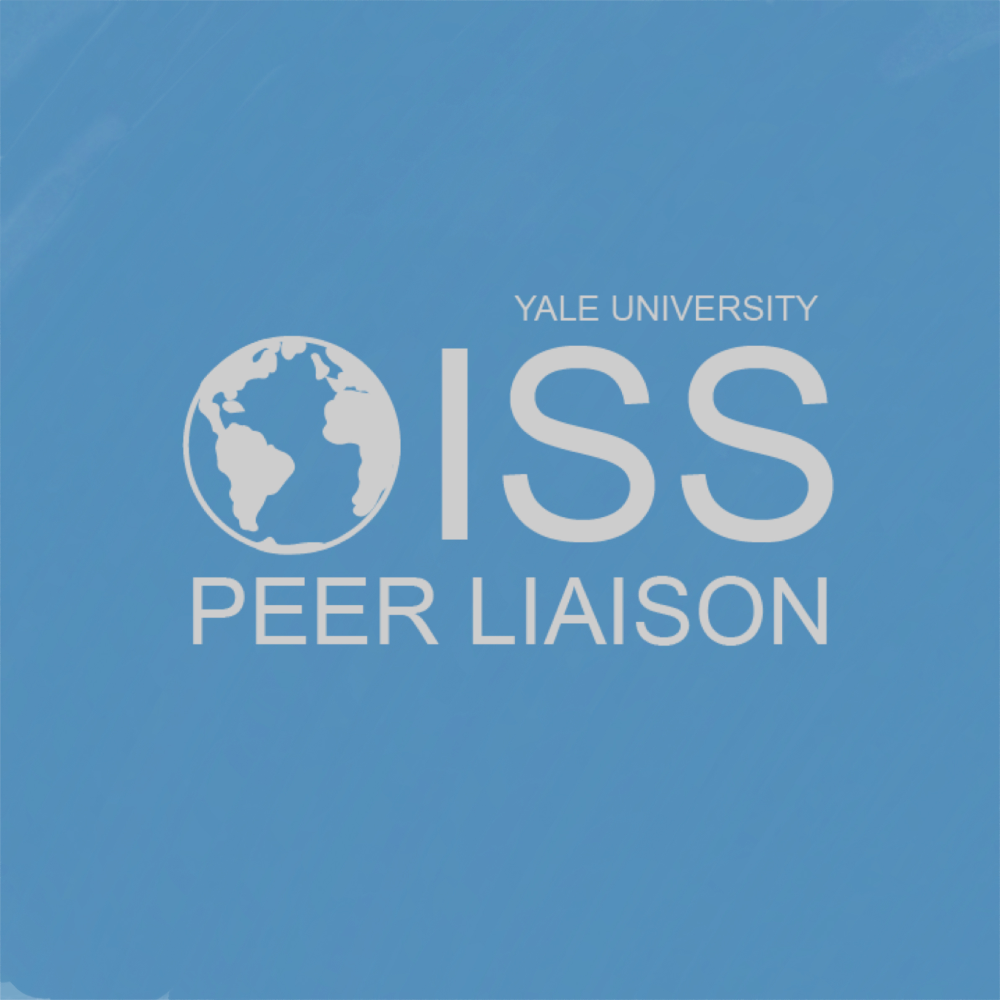

Teaching Physics to First-Year Undergrads
As a first and second-year grad student, I taught different lab courses and recitations. [list the classes here and say why one of the courses does not have reviews]PHYS1291 REVIEWS PHYS1292 REVIEWS PHYS1401 REVIEWS


The Physics of Insterstellar
[Something about the class I taught with Carolyn]VIEW SLIDES CLASS DESCRIPTION


NEW HAVEN SCIENCE FAIR
[Something about the class I taught with Carolyn]VIEW SLIDES CLASS DESCRIPTION
